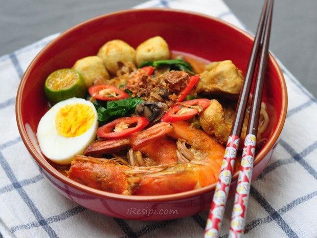

Mee Kari

Description
A very delicious recipe of Mee Kari (Curry Mee) from Malaysia
and very popular amongst hawker's dish. Mee Kari is a dish
that full of flavours with slightly creamy soup infused
with coconut milk.
Ingredients
- 500 g (17 oz.) prawns, steamed and shelled; use the heads to sweeten
the stock by liquidising them with 500ml water
- 3 to 4 pieces soaked cuttlefish heads
- 200 g (7 oz.) fried soya bean cubes/ tow pok, halved or quartered
- 300 g (10 oz.) shredded, cooked chicken meat
- 500 g (17 oz.) blanched bean sprouts
- 600 g (21 oz.) blanched yellow noodles
- 300 g (10 oz.) blanched vermicelli/rice sticks
- 1 kg (35 oz.) grated coconut, mixed with 4 litres water and squeezed for the coconut milk to be used as main stock
- 600 g (21 oz.) shelled cockles/bloody clams, optional
Spices (Finely Ground)
- 100 g (4 oz.)shallots
- 25 g (1 oz.) garlic
- 3 tablespoons coriander seeds
- 4 tablespoons chili paste
- 2 tablespoons lemongrass
- 10 peppercorns
- 1/2 tablespoon belacan, Malaysian shrimp paste granules
Steps
- Heat 1/2 cup oil to saute the spices till fragrant.
- Add in salt, rock sugar and 500ml general santan and bring to a low boil till sugar dissolves.
- Add in the rest of the coconut milk, tow pok.
- When soup comes to a boil, add prawn stock and seasoning, then bring to just boiling point.
- Remove from fire and use stock as a soup for the yellow noodles and vermicelli.